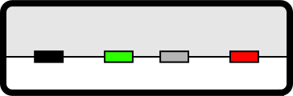
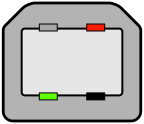
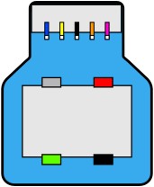

I spend time investigating a non-existing bug today because I misunderstood a USB term. So I made myself a cheat sheet. Maybe it will save time to someone.
| Marketing Name | Also Known As | Signal Gbps | Signal MiB/s | Wires | Cable |
|---|---|---|---|---|---|
| USB 1.1 | Full Speed | 12 Mbps | 1.5 MiB/s | 4 | 4m |
| USB 2.0 | Hi-Speed | 480 Mbps | 60 MiB/s | 4 | 4m |
| SuperSpeed USB 5Gbps | USB 3.0 USB 3.1 USB 3.2 USB 3.1 Gen 1 USB 3.2 Gen 1 |
5000 Mbps | 625 MiB/s | 8 | 3m |
| SuperSpeedPlus USB 10Gbps | USB 3.1 USB 3.2 USB 3.1 Gen 2 USB 3.2 Gen 2 |
10000 Mbps | 1250 MiB/s | 8 | 2m |
| SuperSpeedPlus USB 20Gbps | USB 3.2 USB 3.2 Gen 2x2 |
20000 Mbps | 2500 MiB/s | 12 | 1m |
| USB4 20Gbps | USB4 Gen 2×2 USB4 |
20000 Mbps | 2500 MiB/s | 12 | 0.8m |
| USB4 40Gbps | USB4 Gen 3×2 USB4 |
40000 Mbps | 5000 MiB/s | 12 | 0.8m |
USB Gen A x B
A = Generation
B = Num lanes used
| Name | Signal | Sig Totala | Encoding | Effective bb | Effective Bb | Real Lifec |
|---|---|---|---|---|---|---|
| USB 3.2 Gen 1x1 | 5,000 Mbps | 5,000 Mbps | 8b/10b | 4,000 Mbps | 500 MiB/s | 400 MiB/s[1] |
| USB 3.2 Gen 1x2 | 5,000 Mbps | 10,000 Mbps | 8b/10b | 8,000 Mbps | 1,000 MiB/s | 800 MiB/s |
| USB 3.2 Gen 2x1 | 10,000 Mbps | 10,000 Mbps | 128b/132b | 9,696 Mbps | 1,212 MiB/s | 780 MiB/s[2] |
| USB 3.2 Gen 2x2 | 10,000 Mbps | 20,000 Mbps | 128b/132b | 19,392 Mbps | 2,424 MiB/s | 1,600 MiB/s[4] |
| USB 4 Gen 2x2 | 10,000 Mbps | 20,000 Mbps | 128b/132b | 19,392 Mbps | 2,424 MiB/s | 1,600 MiB/s |
| USB 4 Gen 3x2 | 20,000 Mbps | 40,000 Mbps | 128b/132b | 38,787 Mbps | 4,848 MiB/s | 2,700 MiB/s[5] |
Note: Multi-lanes systems, uses lane striping (on TX) and lane bonding (on RX).
a - What they put on the box.
b - Rate with encoding overhead. e.g, 8b/10b = 20%.
c - Real life sequencial read rate.
4 wires: PWR, GND, D+, D-.
8 wires: PWR, GND, D+, D-. RX+ , RX- , TX- , TX+.
12 wires: PWR, GND, D+, D-, RX1+, RX1-, RX2-, RX2+, TX1+, TX1-, TX2-, TX2+.
Note: 1 USB lane = 1 twisted wire pair +/-.
Note: 4 wires = 1 half-duplex lane, 8 wires = 2 lanes (one up, one down), and 12 wires = 4 lanes (two up, two down).
| Type-A 4-wires | Type-A 8-wires | Type-B 4-wires | Type-B 8-wires |
|---|---|---|---|
|  |  |  |
Only the USB Type-C connector has enough pins to support two lanes.
- CC1 and CC2 are downstream facing port (DFP) and upstream facing port (UFP) detection. Also used for power negotiation and alt mode switch.
| Specifications | Max. Voltage | Max. Current | Max. Power |
|---|---|---|---|
| USB 2.0 | 5V | 500mA | 2.5W |
| USB 3.0 / USB3.1 | 5V | 900mA | 4.5W |
| USB Battery Charging (BC) 1.2 | 5V | 1.5A | 7.5W |
| USB-C Current Mode (non-PD) | 5V | 3A | 15W |
| USB-C / Power Delivery (PD 1/2) | 20V | 5A | 100W |
| USB-C PD 3.1 (EPR) | 48V | 5A | 240W |
USB 1.0 (Jan, 1996).
USB 1.1 (Sep, 1998).
USB 2.0 (Apr, 2000).
USB 3.0 (Nov, 2008).
USB 3.1 (Jul, 2013).
USB 3.2 (Sep, 2017).
USB 4.0 (Aug, 2019).